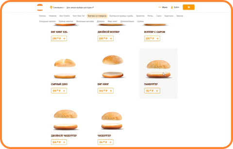
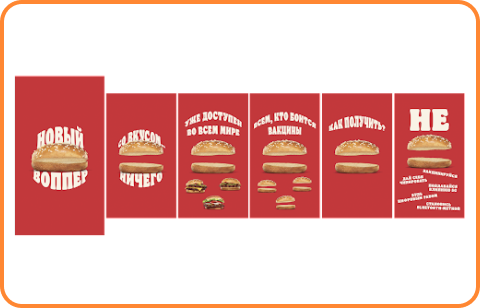
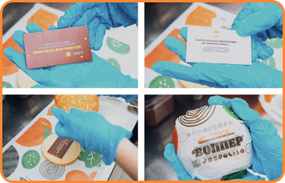

Задача клиента
Провести заметную охватную PR-кампанию на социальную тему
Задачи рекламной кампании
Придумать кампанию, способную донести до широкой публики идею важности вакцинации от СOVID-19 через продукцию бренда
Целевая аудитория
М/Ж 18-30
Активные пользователи интернета, лояльные потребители бренда Burger King
Какое решение мы предложили
Мы решили пойти рациональным путем. И прямо показать людям, что они рискуют потерять, если заразятся COVID-19. Поскольку главный симптом коронавируса — потеря вкуса, Burger King пожертвовал главным... вкусом воппера, своего фирменного бургера!
На один день коронавирус «хакнул» сайт Burger King и украл вкус всех вопперов. Для этого мы заменили в меню все бургеры на пустые булки — бургеры без начинки
Затем мы заменили лого во всех сообществах бренда и через посты и OLV анонсировали новинку: воппер со вкусом... ничего! Ведь именно таков его вкус при коронавирусе
В ответ на бурную реакцию в комментариях и вопросы, как получить «ничевоппер», мы выпустили инструкцию в сторис: «Не вакцинируйтесь — и он будет ваш!». Все публикации имели ссылку на Центр информации о COVID-19
Помимо этого, мы «сплавили» вкус воппера по Москве-реке — в течение недели на корабле нестандартный мобильный билборд транслировал видеоролик, обыгрывающий сам рекламный носитель. Сюжет был построен вокруг исчезновения начинки из воппера Burger King, метафоры о потере вкуса у заболевшего коронавирусом: «Вкус был… Да сплыл? Прививайся! Не дай COVID-19 слить вкус воппера!»
В ресторанах Burger King мы украли вкус воппера прямо из-под носа у наших посетителей. Вместо начинки люди находили лишь пару пустых булок с посланием от коронавируса и напоминанием о вакцинации. Каждый такой «ничевоппер» на кассе можно было обменять на нормальный «воппер здорового человека». Всего в ресторанах мы раздали около 7 тыс. «ничевопперов»
Но это был не последний сюрприз. На кассах посетителей ждал «левивоппер» — инсталляция «ничевоппера» с парящей в воздухе булкой. Он не просто привлекал внимание, но и через QR-код вел на карту пунктов вакцинации от Яндекс для записи на прививку
Наши результаты
2 500 000 +
Охват: (преимущественно органика)
45 000 +
Реакции и упоминания
28 000 +
Переходы на Центр информации о COVID-19
11 200 +
Переходы на карту вакцинации от Яндекс
Как это повлияло
на выполнение маркетинговых
и бизнес задач клиента
Клиент получил большой охват, кучу восторженных отзывов потребителей, награды на фестивалях. Но главное - имидж бренда, думающего о здоровье своих потребителей
Мнение нашего менеджера, который вел проект
Александр Овсянкин,
креативный директор Nectarin
За сравнительно скромный бюджет мы постарались выполнить кампанию в духе Burger King — продуктово и заметно! Надеюсь, что в будущем нас ждет еще много совместных и важных для общества проектов
Мнение клиента о нашей работе, нашем сервисе и итогах РК
Владимир Первозванский,
руководитель отдела маркетинговых
коммуникаций
Текущий приоритет Burger King - вкус. Мы делаем по-настоящему вкусные бургеры, постоянно улучшаем вкусовые качества текущей линейки продуктов, придумываем “вкусные” во всех смыслах промо.
И мы решили действовать от обратного! Особенность этой рекламной кампании заключалась в создании продукта без вкуса, который позволял ощутить последствия COVID-19. Данная креативная идея больше всего подходила под ситуацию во время пандемии и это был отличный способ привлечь внимание к связке Burger King = вкусно. Использовав актуальный инфоповод, «Ничевоппер» от Burger King помог понять людям: «Проще сделать прививку, чем потерять вкус любимых вопперов!»
Команда проекта
Елена Трунова
Контентный директор
Александр Овсянкин
Креативный директор
Елена Летова
Проджект-менеджер
Евгений Сенцов
Директор отдела нового бизнеса
Диана Бородачева
специалист отдела нового бизнеса
Максим Комаров
Продакшн-директор